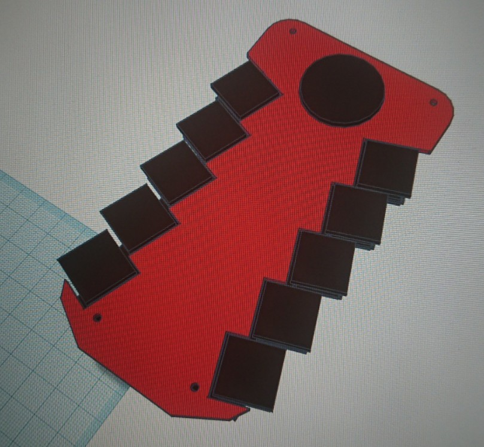
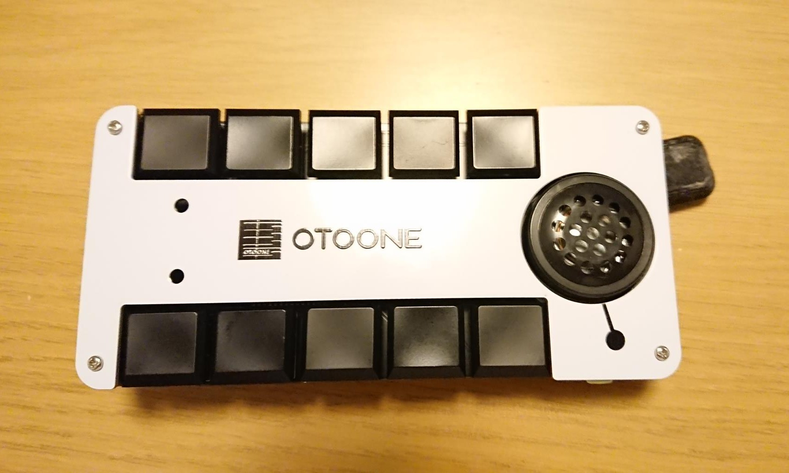
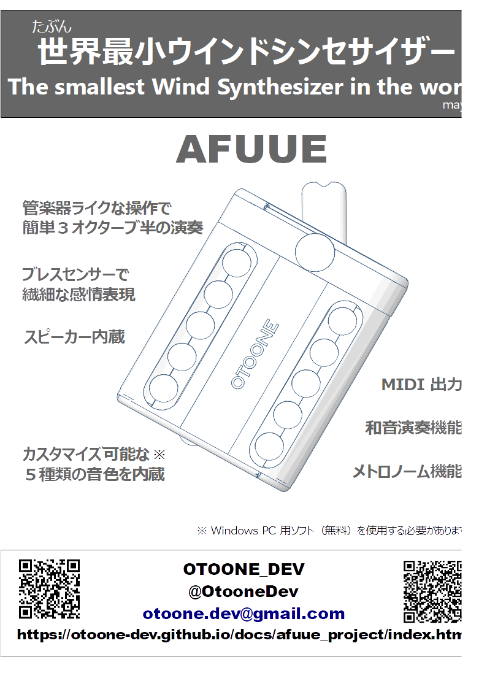
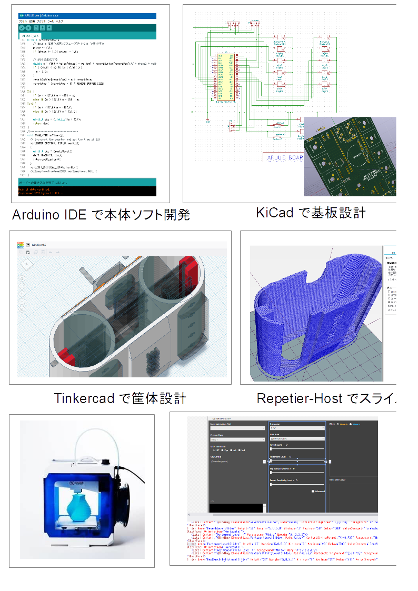
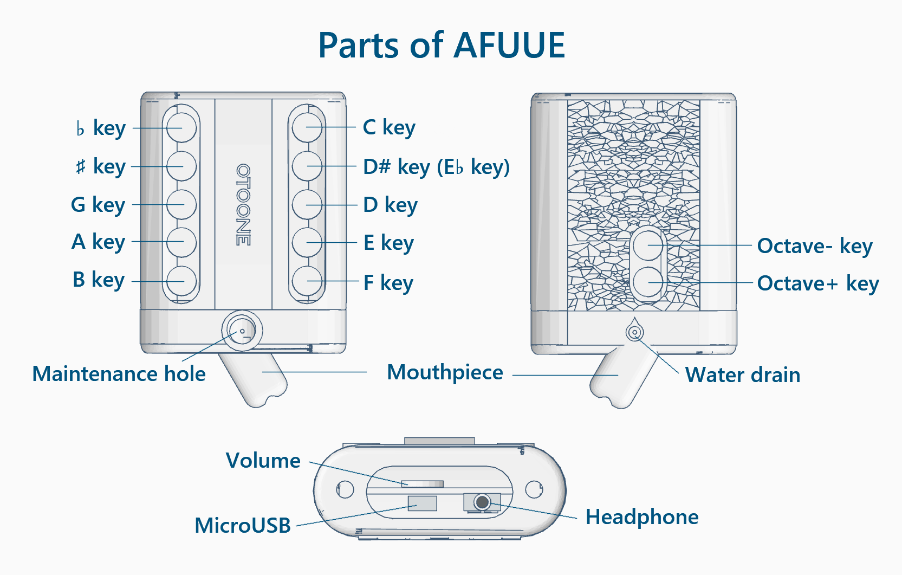
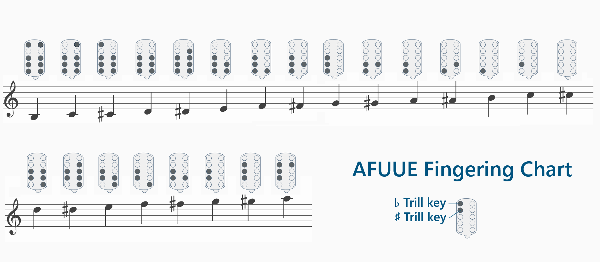
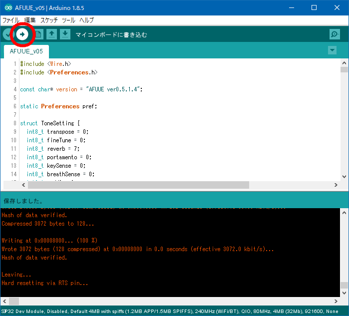
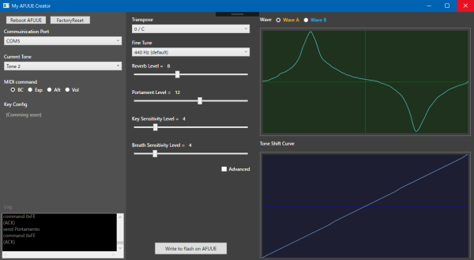

AFUUE (ウインドシンセサイザー) とは
プロジェクトページはこちらに引っ越ししました
超小型の自作ウインドシンセサイザー(電子管楽器)です。
３オクターブ半の広い音域と、息による音の強弱で、感情をこめた演奏表現が可能です。
AFUUE2 次世代機開発中。随時 Twitter で状況を報告しています。

AFUUE2 (2022/12 発売)

AFUUE (2021/5 発売)

プレイデモ
Jesahm さんに吹いていただきました。
動画
「結証 / 緑黄色社会」吹いてみました。 by OTOONE_DEV
AFUUE2 組み立て動画 (6分) by OTOONE_DEV
「宝島」吹いてみました。 by OTOONE_DEV
AFUUE 組み立て全行程ノーカット版 (25分) by OTOONE_DEV
特徴
(以降 MakerFaireTokyo2020 出展時の情報です)

各部名称

運指

Ｑ＆Ａ
Q: 電池は内蔵してないの？
A: 内蔵できるバージョンのキット販売を予定しています。詳しくはページ上部のリンクからプロジェクトページを参照ください。
Q: マイコン(CPU) は何を使ってるの？
A: ESP32 です。マイクロUSB端子からプログラムも可能です。
誰か音源作ってください。
Q: ブレス (気圧) センサーやアンプは何を使ってるの？
A: 気圧センサーは BMP180 です。値は温度による補正が必要です。
アンプは秋月電子通商さんの AE-PAM8012 です。
Q: ブレスの MIDI 出力は何で出力するの？
A: ブレスコントロール、エクスプレッション、アフタータッチなどが
選べます。
Q: BLE_MIDI (Bluetooth-MIDI) には対応しないの？
A: 対応済ですが、対応楽器をもってないので検証不足です。
Q: 和音ってどうやって演奏するの？
A: 通常のドレミ…の操作が C,D,E で、オクターブスイッチで
マイナーやディミニッシュなどに切り替えます。
Q: 販売する予定は？
A: キット販売を予定しています。詳しくはページ上部のリンクからプロジェクトページを参照ください。
本当はウインドシンセ作ってない KORG さんとかに作ってほしい。
大人の科学マガジン（学研さん）にも作ってみてほしい。
Q: 色は３色だけ？
A: 3D プリンタで出せる色なら、何色でも作成可能です。
白で作って、あとで色つけるのもアリです。
起動時のキー操作について
起動時にキーを押し続ける事で様々な変更が可能です。
(設定ツールが接続できる環境であれば、そちらからの変更の方が楽です)
| キー |
効果 |
備考 |
| Cキー |
メトロノームON |
早さ変更などは設定ツールから |
| D#(E♭)キー |
和音モード |
OctDown=minor, OctUp=dim,
OctDown+OctUp=sus4 |
| Dキー |
MIDI出力モード |
スピーカーやヘッドホン端子からは音は鳴りません |
| Eキー |
B♭管 |
|
| Fキー |
E♭管 |
|
| Bキー |
トーン番号1 |
|
| Aキー |
トーン番号2 |
|
| Gキー |
トーン番号3 |
|
| #キー |
トーン番号4 |
|
| ♭キー |
トーン番号5 |
|
内蔵ソフトウェア更新方法
AFUUE の内蔵ソフトウェアの更新方法です。
※ こちらは電池内蔵していない頃の情報になります。
最新のソフトウェアはページ上部のリンクからプロジェクトページを参照ください。
AFUUE を PC に接続してください。
ダウンロード(zip)
上記リンクから zip ファイルをダウンロードし、解凍してください。
解凍すると AFUUE_v05 フォルダができます。フォルダ名と中身のファイル名は変えないでください（フォルダ位置は移動しても大丈夫です）
AFUUE_v05 フォルダ内の AFUUE_v05.ino をダブルクリックすると Arudino IDE が起動します。

起動しない場合は、Arduino IDE を起動して「開く」から選択してください。
(Arduino IDE がインストールされていない場合は、インストールし、ESP32 devkit を使えるようにセットアップしてください)
Arduino IDE が起動したら、(→) ボタンを押します。
数分～十数分待つと、書き込みが完了し、AFUUE が再起動します（ドー♪ と音が鳴るはずです）
(※) 後述の My AFUUE Creator が起動していると書き込みできません。ツールは終了しておいてください。
以上で書き込みが完了です。
My AFUUE Creator (設定ツール) 使用方法
AFUUE を PC に接続してください。
ダウンロード(zip)
上記リンクから zip ファイルをダウンロードし、解凍してください。
解凍すると MyAfuueCreator フォルダ内に MyAfuueCreator.exe がありますので、AFUUE を接続した状態で起動してください。

起動した状態で右側に波形が出ない場合、左上の Communication Port の項目を変えてみてください。
波形が表示されたら、下記の順序で編集します。
(1) Current Tone を切り替えて、５つあるトーンのうち編集したいもの１つを選びます。
(2) Transpose, Reverb, Portamento などを編集したり、Wave や Tone Shift Curve を編集します。
(3) この状態を AFUUE に記憶させるには [ Write to Flash on AFUUE ] をクリックします。
全ての状態をリセットしたいときは [ Factory Reset ] を押して数秒待ちます。
otoone.dev@gmail.com
戻る